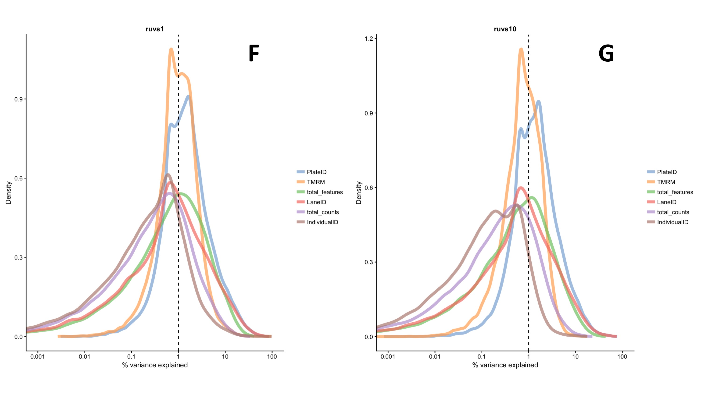
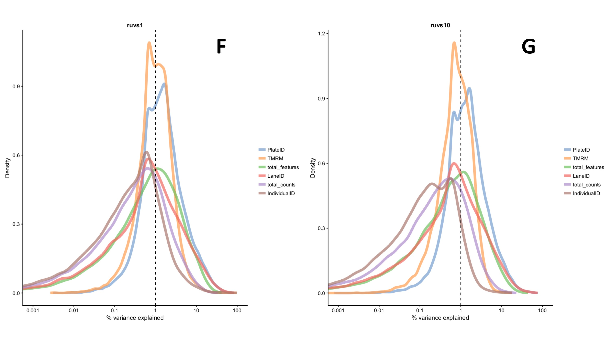

Single-cell RNA-seq analysis
Background
RNA-sequencing (RNA-seq) uses next-generation sequencing to identify and quantify the RNA that is present enabling gene expression levels to be quantified (Ramsköld et al., 2012). RNA-seq can be performed at the single cell level in single-cell RNA-seq (scRNA-seq) which was developed by Tang et al., 2009. Unlike bulk RNA-seq, in which individual cell signals are averaged out, scRNA-seq enables differences in the transcriptomes of cells to be identified (Shapiro, Biezuner & Linnarsson, 2013). Therefore, scRNA-seq is particularly valuable when studying cell-specific transcriptome changes, for example the ageing response in mitochondria (Shapiro, Biezuner & Linnarsson, 2013).
scRNA-seq can be applied to mitochondria to identify and quantify the levels of heteroplasmy. Furthermore, by comparing the transcriptomes of cells with different levels of heteroplasmy, an insight can be gained into how heteroplasmy affects the expression of mitochondrial and nuclear genes. Following scRNA-seq, various processing steps must be performed on the raw data in order to reach meaningful conclusions. Batch effects, which occur due to repeating experimental procedures, must be removed. Batch effects can arise due to the experiment being performed with different reagents, experimenters, or simply at a different time or on a different day. It is essential that batch effects are removed as they can confound the biological signal of interest, preventing patterns or differences from being identified (Kiselev et al., 2018).
Methods
Data
The data was obtained from 384 Myoclonic epilepsy with ragged-red fibers (MERRF) fibroblast cells. These cells were categorised into the following biological conditions according to their MERRF genotype and TMRM measurements: wild type with low TMRM; wild type with high TMRM; mutant with low TMRM; mutant with high TMRM. The data was collected in four batches, each of which contained every biological condition. Figure 3 is a schematic to represent the experimental set-up. Two different scRNA-seq protocols were used. Plates 1 and 3 (Lane 59) were analysed using SmartSeq2 (Picelli et al., 2014) and plates 2 and 4 (Lane 60) were analysed using G&T-seq (Macaulay et al., 2015). Figure 3 shows the experiment set-up. The output data was in the form of an expression matrix in which the columns correspond to cells and the rows correspond to genes.
{kind=link}
Quality control
The output expression matrix was analysed using various packages from the Bioconductor software in R (R Foundation for Statistical Computing, 2016; Huber et al., 2015). Firstly, genes were removed that were not expressed in any cells. Cells that contained too few reads were removed as the cells may have been broken or even absent from the well. A minimum threshold of 500,000 reads was selected based on analysis of the distribution of reads per cell. In order to have a good representation of the transcriptome, cells containing too few unique genes were removed. In this case, cells with less than 4000 unique genes were removed. Finally, genes were removed that were expressed in too few cells; at least two cells were required to contain more than one transcript of the gene.
Normalisation
The $scran$ package in Bioconductor was used to normalise the library size. Library size must be normalised as the number of reads derived from individual cells may differ substantially. $scran$ is a normalisation method designed specifically for scRNA-seq data. It pools cells together and calculates a normalisation factor for the sum of each pool.
Removal of batch effects
Various methods for removing batch effects were tested, a summary of which is shown below in table 1.
| Method name | Approach |
|---|---|
| RUVg | Uses negative control genes that are not differentially expressed, i.e. ERCC spike-ins (Risso et al., 2014). |
| RUVs | Uses technical replicates for which the covariates of interest are constant (Risso et al., 2014). |
| ComBat | An empirical Bayes method in which data is standardized so genes have similar overall mean and variance (Liu & Markatou, 2016). Requires balanced experimental design. |
| General linear model (GLM) | Generalization of a multiple linear regression model. |
RUVg and RUVs were performed twice with different values of $k$ ($k = 1, k = 10$), where $k$ represents the number of factors of unwanted variation. These variations of the RUVg and RUVs methods are herein referred to as RUVg1, RUVg10, RUVs1 and RUVs10. Following removal of batch effects by all of the methods in table 1, their effectiveness was analysed and compared using principle component analysis (PCA) and density plots showing the variance explained by each of the following variables: TMRM, lane ID, total features, total counts and plate ID. A brief explanation of each variable can be found in table 2.
| Variable name | Description |
|---|---|
| TMRM ($TMRM$) | A cell permeant dye that accumulates in mitochondria with intact membrane potentials, enabling it to be used as a proxy for mitochondrial function and heteroplasmy. Cells were placed into wells according to their TMRM category and genotype. |
| Lane ID ($LaneID$) | The scRNA-seq protocol that was performed. Either G&T-seq or SmartSeq2. |
| Total features ($total\_features$) | The total number of unique genes present in an individual cell. |
| Total counts ($total\_counts$) | The total number of reads present in a cell from all genes, i.e. if the gene was expressed in multiple copies. |
| Plate ID ($PlateID$) | See figure 3. Each plate contained all four TMRM conditions. Plate ID corresponds to the different batches. |
| Individual ID ($IndividualID$) | Whether the cell was wild type or mutant for the MERRF mutation. |
Results
Figures (?? - ??) are density plots showing the variance explained by each variable for every batch effect correction method (see table 1). These plots are generated by calculating Pearson’s correlation coefficient squared (R2) for each variable (see table 2) for each cell. Then, for each variable, all of the values of R2 are plotted as a density plot in which the peaks correspond to high concentration specific of that R2 value. Therefore, narrow, tall peaks represent high concordance in R2 values amongst the cells analysed.{kind=link}
{kind=link}
 

{kind=link}
- Heather Jackson
- CID: 01402152
- Imperial College London
- © Design: HTML5 UP